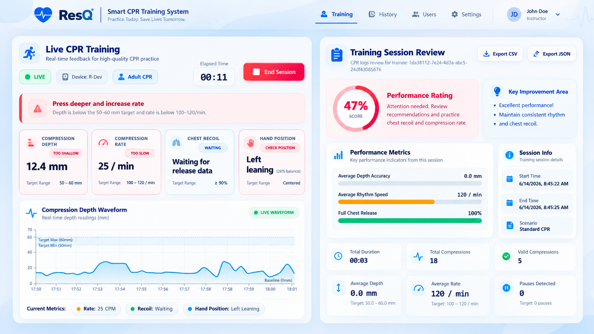

Hardware
- CPR training manikin and fitted ResQ overlay
- ESP32-C3 controller and power
- Intact sensor, pneumatic, and cable connections
A practical, instructor-led workflow for preparing the local station, pairing a manikin, calibrating sensors, running training, and reviewing results.
Normal operation uses SENSOR mode. USB mode is reserved for maintenance and testing.
LocalHub remains the preferred control surface. Physical buttons are primarily for recovery and maintenance actions.
Check the overlay, bladder, sensors, cables, controller, manikin, and power supply for visible damage or disconnection.
Open the Windows application, select Start Services, and confirm that the MQTT broker, local backend, and dashboard report Running/Healthy.
Select SENSOR mode for normal CPR use and wait for the device to complete its startup and connectivity sequence.
For first-time setup, open Pair Manikin, scan the device QR code, review the Wi-Fi and LocalHub details, then save the configuration. Otherwise confirm the device is Online/Paired.
Remove all pressure from the overlay, stabilize the manikin, and verify the physical setup before opening Calibration / Pre-Check.
Select the calibration profile, choose Start Calibration, follow the guided rest and reference steps, and wait for strict readiness.
Select the trainee, course or training profile, and a manikin showing Ready for Session. Then select Start Session.
Use the instructor dashboard to review depth, rate, recoil, interruptions, pressure balance, connection state, and coaching cues. Trainees can use the permitted LAN dashboard.
Select End Session in LocalHub. Wait for the firmware acknowledgement and completed-session processing.
Open the completed session to inspect the authoritative score and metric summary. Authorized users can export CSV or JSON session reports.

The dashboard exposes training measurements and device state. The instructor remains responsible for the teaching context and for interpreting the results within the institution’s selected training standard.
Always identify LEDs by the State and Activity labels rather than by color alone.
A long press is held for at least three seconds and released. Behavior depends on the current firmware state.
Use the LocalHub message, device state, LED pattern, and network status together. Avoid guessing from one signal alone.
Close duplicate instances, check for port conflicts, restart LocalHub, and choose Start Services again. Record any error shown by the application.
Check power, SENSOR mode, shared Wi-Fi, router coverage, LocalHub service health, and MQTT connectivity. Retry pairing only after confirming the network path.
Remove all chest pressure, inspect bladder and sensor connections, stabilize the manikin, follow the displayed reason and recovery action, then retry. Contact a technician if damage is suspected.
Confirm the device is paired, online, in SENSOR mode, not already in a session, and strictly ready after successful calibration.
Confirm a session is active, the sensors are connected, firmware telemetry is publishing, the SSE stream is connected, and no firewall or LAN issue separates the browser from LocalHub.
Restore power, network, and LocalHub services. Review the interrupted session record and device fault reason. Start a new session only after readiness is restored.
Keep LocalHub running, connect the tablet to the same Wi-Fi or Windows hotspot, open Student Tablet Access, and scan the displayed QR code. Tablet browsers use REST and SSE—not MQTT.
When requesting help, include the device ID, LocalHub and firmware versions, current LED pattern, displayed reason code, Wi-Fi/MQTT/backend status, and the steps immediately before the issue.
The repository includes the maintained ResQ User Manual v1.0 and technical documentation for firmware, networking, and validation.